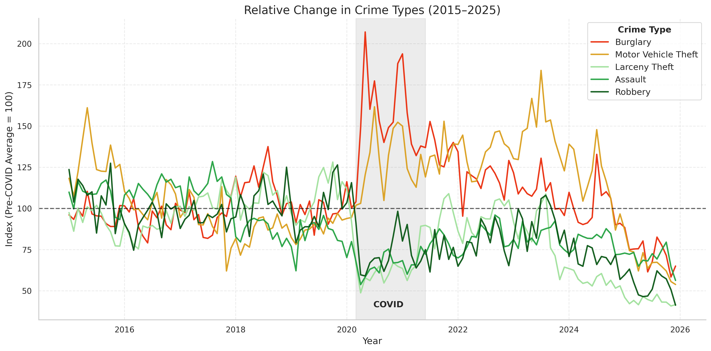

A Decade of Incident Reports
This analysis is based on the San Francisco Police Department's (SFPD) publicly available incident report database, focusing on the recorded crime activity from 2015 to 2025. This dataset covers all officially reported incidents across the city's police districts, capturing everything from larceny theft to violent offenses.
Each record includes the incident category, date and time of occurrence, the police district, and geographic coordinates. These details makes it possible to analyze not just how much crime occurs, but where it clusters and when it tends to happen, which both are important information for understanding behavioral patterns.
Crime data reflects what police record, and not what actually happens. As Richardson et al. (2019) document, enforcement patterns shape the data itself: over-policed neighborhoods generate more incidents, not necessarily more crime. Keep this in mind when interpreting the patterns below.
To keep the analysis focused, we focus on burglary: a crime closely tied to environmental conditions. Empty streets, shut down businesses, and economic pressure - all pandemic-related factors - reshaped the conditions that either invite or deter crime. By tracing burglary trends, we uncover how the pandemic reshaped the urban landscape of crime in San Francisco.
Three Things the Data Reveals
Before diving into the visualizations, here is a high-level synthesis of the patterns that emerge most clearly from the data.
Total incident counts dropped approximately 20% from 2019 to 2020: the largest single-year decline in the entire period. That suggests that the pandemic had an enormous impact on the crime tendencies across San Francisco.
While overall crime fell sharply in every district, burglary incidents moved in the opposite direction, rising 52.7% from 2019 to 2020 across all of San Francisco. Northern district almost doubled its burglary count in a single year.
Burglary rapidly declined with a jaw dropping 27.6% in 2022 alone, just after peaking in 2020 under the influence of the pandemic. So what emerged in those two years, recovered fast, when society got back to normal.
Not just San Francisco
"Several studies have found declines in residential burglary and increases in commercial burglary following COVID-19 lockdown orders across several cities in different states."
— Yim & Riddell (2022), citing Abrams (2021); Ashby (2020); Carter & Turner (2021)
Exploring the Patterns
The three figures below, zoom in on the story from different angles. Firstly, by comparing how crime types diverged during COVID, then by mapping where burglary concentrated across the city, and finally by breaking down when it happened.
Five crime types indexed to their pre-COVID average (= 100). Burglary and motor vehicle theft spike sharply in 2020-2021, while assault, robbery, and larceny theft decreases. It reveals a clear divergence in how COVID affected different crimes.

The chart reveals a clear split. When COVID-19 hit in 2020, most crime types fell drastically below their pre-COVID baseline: assault, robbery, and larceny theft all dropped well below 100. But burglary and motor vehicle theft moved in the opposite direction, spiking far above their historical averages.
Burglary peaked at roughly double its pre-COVID average in mid-2020 and again in late 2021, before declining consistently. By the end of 2025, it had dropped to an index of approximately 60, which is the lowest level in the entire period. Motor vehicle theft showed a more modest spike during COVID, but remained elevated well after restrictions lifted, peaking again around 2024 before converging toward the same index as burglary. The remaining crime types stayed persistently below their pre-COVID averages throughout, suggesting that the pandemic accelerated a longer-term structural shift in SF crime patterns.
An interactive heatmap showing the spatial concentration of burglary incidents across San Francisco's police districts. Hover over district areas to explore incident counts and density over the full ten-year period.
Rather than spreading evenly across the city, burglary clusters in a small number of districts. Northern consistently ranks highest across all three periods, while Tenderloin remains the lowest-activity district despite its reputation for street crime (Wikipedia, Tenderloin, San Francisco).
Before COVID, Southern and Northern districts had the highest burglary rates (respectively 2.28 and 2.57 daily incidents). Both cover large part of the city's commercial core: Northern Station encompasses dense mixed-use neighbourhoods including Hayes Valley, Polk Gulch, and the Marina. However, Southern's SoMa is home to major tech companies, museums, and the Moscone Convention Center. This aligns with Routine Activity Theory (Cohen & Felson, 1979), stating: offices, shops, and parked cars concentrate valuables in predictable locations, while busy streets make it easy for a burglar to blend in and go unnoticed. Central (2.12) and Mission (1.73) followed closely, indicating a general higher crime activity in the main city. Bayview (1.70) and Taraval (1.54) had moderate levels, while the remaining districts were well below 1.5 daily incidents on average.
The COVID-19 lockdown fundamentally disrupted this spatial pattern. During 2020-2021, burglary rates surged dramatically across most districts, but the increase was far from uniform. Northern district more than doubled from 2.57 to 5.29 daily incidents (a 106% increase), becoming a center of heightened activity. Central and Mission saw similarly sharp spikes of approximately 66% and 85% respectively, reaching 3.51 and 3.19 daily incidents. Southern also increased substantially to 3.32 daily incidents. However, some districts showed more modest increases: Tenderloin rose from 0.65 to 1.06 (63%), while Park, which had been a lower-activity district at 1.24, increased by about 69% to 2.10. This suggests that while commercial districts were hit hardest, lockdowns created vulnerability across more varied locations. Only Bayview, which is mostly industrial and residential, had lower burglary rates compared to pre-pandemic, likely because it has fewer commercial targets compared with the city’s center (SF Examiner, 2023).
The post-COVID recovery (2021-2025) shows a decisive return toward pre-pandemic levels, though with important variations. Northern declined from its peak of 5.29 to 2.79 daily incidents, nearly returning to its pre-COVID rate of 2.57. Central and Richmond also retreated substantially, to 2.12 and 1.33 respectively—levels that closely mirror their pre-COVID baselines. Southern stabilized at 2.20, just slightly below its pre-COVID rate of 2.28. This convergence suggests that as urban routines normalized, the opportunity structures that drove the COVID spike largely dissolved. Notably, even districts that saw recovery remained somewhat elevated compared to pre-COVID: Tenderloin stabilized at 0.80 (versus 0.65), and Mission at 2.42 (versus 1.73), indicating that the pandemic may have left a modest residual effect in some areas.
Tenderloin is a notable outlier: despite its social vulnerability, it consistently records the lowest burglary rates of any district (0.65 pre-COVID, 1.06 during COVID, 0.80 post-COVID). Its high density of social services and long-term residents likely means constant street activity and few high-value targets. These are conditions that suppress burglary even as other crime types remain elevated—and they appear resilient even to pandemic-driven shifts in urban activity.
Burglary incidents broken down by hour of day, revealing a structured and predictable rhythm.
Another remarkable finding in the dataset is the strong temporal trend in burglary timing. Rather than occurring randomly throughout the day, incidents cluster. This is consistent with Routine Activity Theory (Cohen & Felson, 1979), which predicts that burglars, and particularly residential burglars, operate according to predictable routines. They state, that crime concentrates where suitable targets, absent guardians, and motivated offenders converge.
The visualization reveals a significant shift in burglary timing across the three periods. Before COVID, the afternoon was the dominant window: the aggregated Pre-COVID line peaks sharply at 17h, consistent with office and retail workers leaving and reducing natural guardianship in commercial areas. Southern district illustrates this most clearly: its Pre-COVID blue line reaches nearly 8.6% at 17h, the highest single-hour share of any period in that district. During COVID and Post-COVID, this afternoon concentration largely disappears citywide, and the early-morning hours (0-4 AM) become dominant instead, which is a shift that holds across almost all districts.
The Northern district illustrates this transition clearly: the Pre-COVID pattern is relatively flat across the day with a mild 17h rise, but the COVID and Post-COVID lines spike sharply at 4 AM, reaching approximately 8%, which is the highest single-hour share of any period in that district. Central follows a similar pattern, with a 4 AM peak above 8.5% in Post-COVID and the 17h peak nearly gone. Richmond is somehow an outlier: in Pre-COVID, the late afternoon (17-18h) is elevated, and the COVID and Post-COVID periods shift the peak to 3-4 AM. In contrary, it also introduces a late evening peak around 20-21h.
Tenderloin shows a more irregular distribution across all three periods. The COVID period produced a sharp spike at 4 AM (~8.9%) and again around 17h. However, the Post-COVID distributioin introduces an unusual concentration around 13h, which are patterns that do not follow the citywide shift. Why Tenderloin diverges is difficult to explain from this data alone. As discussed in the geographic analysis above, the district's consistently low overall burglary incident count already makes it an outlier, and its hourly distribution follows suit. This district-level divergence underlines that while the aggregate trend points toward early-morning burglary becoming more prevalent after COVID, the pattern is not uniform across all parts of the city.
Burglary as a Window Into Urban Change
Burglary in San Francisco did not follow the general crime trend during COVID-19, instead it moved against it. While most incident types declined sharply in 2020, burglary rose 52.7% citywide, with Northern district nearly doubling in a single year. This divergence is consistent with what Yim & Riddell (2022) found across multiple US cities: lockdowns emptied commercial spaces and removed the everyday guardianship that normally deters opportunistic burglary.
The geographic and temporal patterns reinforce this reading. Burglary concentrated in districts with dense commercial corridors - Northern, Central, Southern - and largely spared Tenderloin, where low burglary rates persisted even at the height of the COVID spike. The hourly distribution shifted too: the pre-COVID afternoon peak around 17h gave way to an early-morning concentration at 3-4 AM during and after COVID, a pattern visible across Northern, Central, and Richmond. Both shifts fit Routine Activity Theory (Cohen & Felson, 1979): as daily routines changed, so did the windows of opportunity.
Since 2022, burglary has declined sharply, dropping 27.6% in 2025 alone, reaching its lowest recorded level across the entire ten-year period. What drove this reversal is not visible in this data. Whether it reflects enforcement changes, post-pandemic urban recovery, or broader shifts in opportunity structures remains an open question. As Richardson et al. (2019) remind us, incident data captures what police record - not what actually happens. The patterns identified here are a starting point, not the full picture.